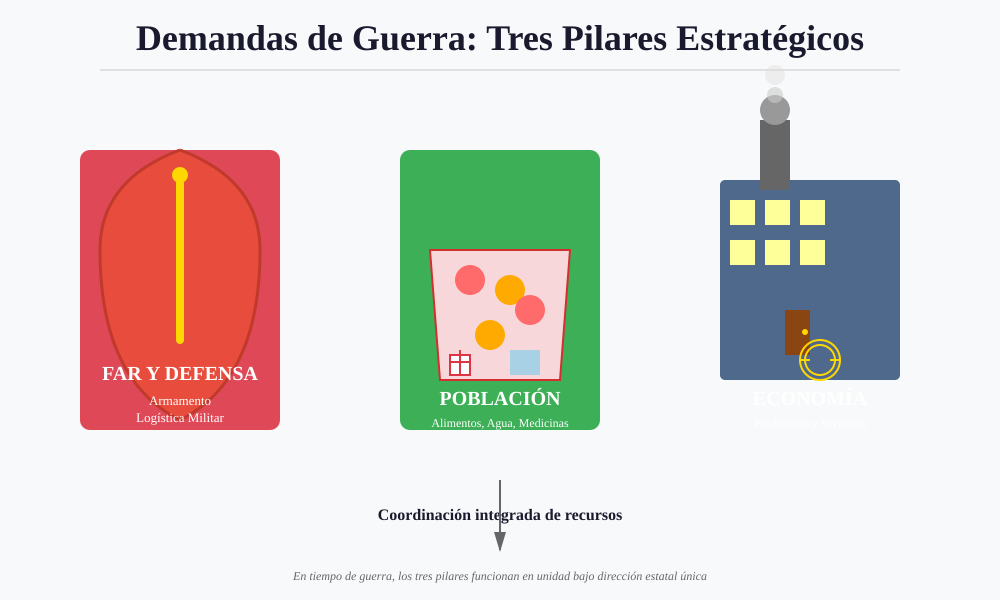
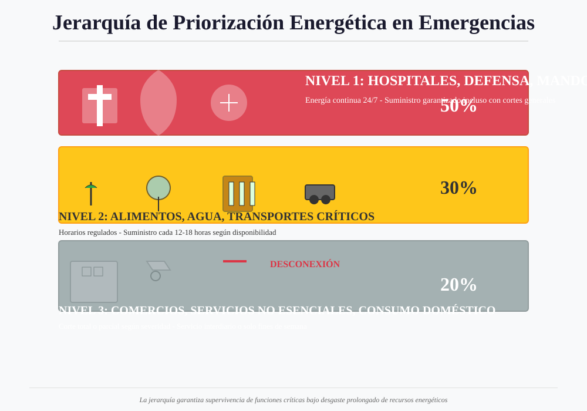
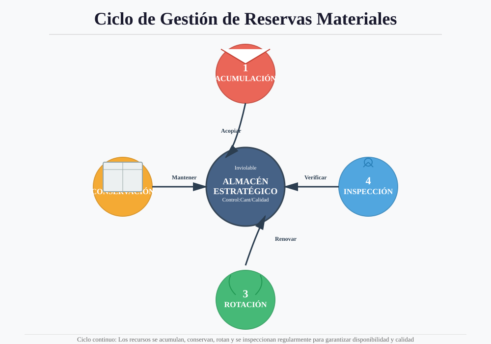
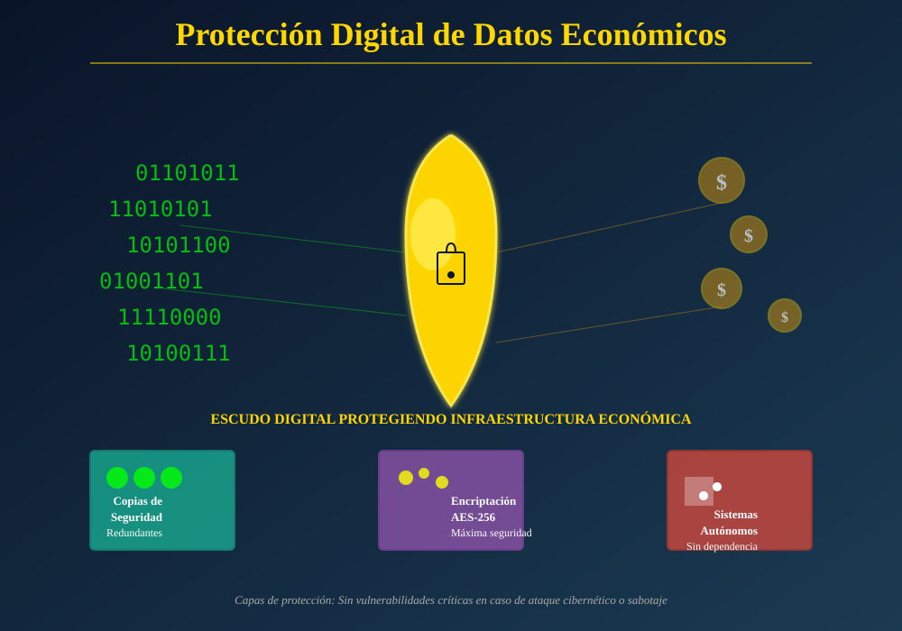
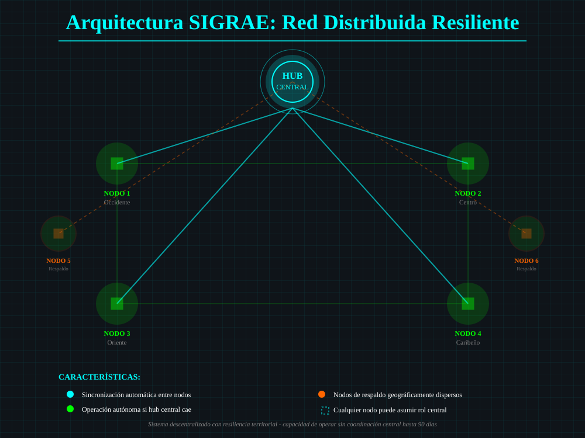

La economía como base material de la resistencia nacional
La preparación de la actividad económico-social para la defensa es el conjunto de medidas organizativas, materiales y financieras que se planifican y ejecutan desde tiempo de paz. Su objetivo es transformar la estructura productiva y de servicios del país para responder a las demandas de una situación excepcional: guerra, bloqueo total o catástrofes.
La preparación de la economía para la defensa es el conjunto de medidas organizativas, materiales y financieras que se planifican y ejecutan desde tiempo de paz. Su objetivo es transformar la estructura productiva y de servicios del país para responder a las demandas de una situación excepcional.
Concepto General
No se trata solo de producir armas, sino de asegurar que la maquinaria económica del país no se detenga ante una agresión externa. La economía es la base material de la capacidad de resistencia nacional.
Objetivos Estratégicos
Sustentar la Lucha Armada
Proveer suministros, tecnología y logística a las instituciones armadas para garantizar su operatividad en cualquier situación.
Garantizar la Supervivencia
Asegurar niveles mínimos de alimentación, salud y servicios básicos para evitar el colapso social.
El Factor Económico en Situaciones Excepcionales
La economía no opera igual en paz que en guerra. La preparación económica busca:
Reducir la vulnerabilidad: Diversificar fuentes de energía y materias primas
Optimizar recursos escasos: Priorizar el destino de cada gramo de combustible o alimento
Lograr Autarquía Territorial: Que cada municipio sea capaz de producir lo que consume
Organización Funcional del Sistema
La preparación de la economía no es un esfuerzo aislado, sino una estructura jerárquica que garantiza la unidad de mando y la coordinación de todas las instituciones.
Niveles de Dirección Económica
Nivel Estratégico
Estado y Gobierno: El Consejo de Ministros es el máximo órgano encargado de dirigir la preparación de la economía nacional.
Nivel de Planificación y Control
Ministerio de Economía y Planificación (MEP): Actúa como el "cerebro" logístico, organizando y controlando la preparación de todas las entidades.
Los Actores del Sistema
Organismos de la Administración Central del Estado (OACE): Cada ministerio responde por la preparación de su sector específico
Órganos Locales del Poder Popular (OLPP): Dirigen la economía territorial y garantizan el autoabastecimiento
Las Entidades Económicas: Son la base del sistema, elaborando su Plan de Tiempo de Guerra
Ministerio de las Fuerzas Armadas Revolucionarias (MINFAR): Establece demandas y asesora en compatibilización de inversiones
Principios Fundamentales
La preparación económica se rige por conceptos estratégicos que garantizan que el país pueda resistir un desgaste prolongado.
Territorialidad y Autoabastecimiento
Es el principio más crítico de la doctrina económica actual. Cada provincia y municipio debe prepararse para ser económicamente viable por sí mismo. Si las comunicaciones nacionales colapsan, el territorio debe ser capaz de alimentar a su población con recursos propios.
Integración en la Planificación Única
La economía para la defensa no es un "plan aparte" sino que debe estar fundida con la economía de tiempo de paz. Toda inversión o proceso productivo hoy debe contemplar su uso mañana en la defensa.
Gradualidad en el Paso al Tiempo de Guerra
La economía no se transforma de un segundo a otro. Existe un escalonamiento previsto: aumento de disposición, activación de reservas y finalmente el máximo esfuerzo defensivo.
Empleo de Recursos Nacionales y Ahorro Extremo
Bajo agresión, la dependencia externa debe ser mínima. Se busca la sustitución de importaciones y el uso intensivo de materias primas nacionales bajo el principio de "hacer más con menos".
Gestión de Demandas y Logística
En situaciones de defensa, el flujo de productos no se rige por la oferta y la demanda, sino por las necesidades de prioridad nacional.
Categorías de Demandas
Para organizar la economía, las necesidades se agrupan en tres grandes bloques:
Demandas para la Lucha Armada
Todo lo que requieren las FAR, el MININT y las Milicias: armamento, municiones, combustible militar, raciones de campaña y servicios técnicos.
Demandas para la Población
Recursos mínimos para mantener la vida: alimentos básicos, agua potable, energía doméstica, medicamentos y artículos de higiene.

Figura 1: Tres pilares de las demandas de guerra
Logística y Reorganización del Transporte
Bajo condiciones de agresión, el transporte se convierte en un recurso crítico. Se establece un mando único de transporte donde el parque de vehículos civiles se pone a disposición de las misiones de defensa. Se optimizan rutas y se descentralizan centros de distribución para evitar vulnerabilidades.
Documentación y Planificación Financiera
Para que la economía no colapse en situaciones extremas, el Estado establece un control riguroso sobre la documentación técnica, el flujo de dinero y la fuerza de trabajo.
El Plan de Tiempo de Guerra (TG)
Es el documento rector en cada entidad económica. Detalla las misiones de producción y servicios para la defensa, el aseguramiento material, la organización del mando en emergencias, y los gráficos de aviso y movilización.
Finanzas en Situaciones Excepcionales
Centralización del Presupuesto: El Estado prioriza el gasto hacia la defensa y la supervivencia
Relaciones Monetario-Mercantiles: Se mantiene el sistema de cobros y pagos bajo condiciones simplificadas
Política de Precios: Control estricto para evitar especulación con productos de primera necesidad
Ajuste del Crédito: Se favorece a empresas que cumplen misiones de guerra
Gestión de la Fuerza de Trabajo
Bajo situaciones de defensa existe movilidad laboral: trabajadores de sectores paralizados se reubican hacia agricultura, industria militar o servicios de salud. Se aplica una escala salarial simplificada que garantiza la subsistencia del trabajador y su familia.
Compatibilización del Desarrollo
La compatibilización asegura que cada vez que se planifica una inversión, se incluyen requisitos que permitan que esa obra sea útil o resistente en tiempo de guerra.
Concepto y Necesidad Estratégica
Significa que una fábrica, un hotel, un puente o una red eléctrica deben incluir requisitos defensivos. Esto evita gastos dobles y preserva los activos en tiempo de crisis.
Objetivos de la Compatibilización
Preservar la soberanía: Evitar que inversiones comprometan la seguridad militar
Proteger recursos y población: Garantizar refugio y resguardo de productos
Incrementar Resiliencia: Diseñar infraestructuras reparables tras un ataque
La Regla del 3%
El inversionista debe asumir el costo de las medidas de defensa hasta un 3% del valor total de la inversión. Si excede ese porcentaje, la diferencia financiera debe ser gestionada por los órganos de defensa o el presupuesto estatal específico.

Figura 3: Jerarquía de priorización energética en situaciones excepcionales
Órganos de Consulta y Aprobación
El MINFAR y la Defensa Civil supervisan que se cumplan todas las normas. El "Dictamen de Compatibilización" es el documento oficial que certifica que el proyecto puede proceder.
Sistema de Reservas Materiales
Las reservas materiales constituyen el respaldo físico de la economía. Son recursos que se acumulan desde tiempo de paz para ser utilizados solo en situaciones de emergencia, desastres o guerra.
Visión General e Inviolabilidad
Las reservas no son simples inventarios; son un patrimonio estratégico. Su característica principal es la inviolabilidad: nadie puede disponer de ellas sin autorización del nivel de mando correspondiente. Este sistema permite al país resistir el desgaste de una agresión prolongada.
Clasificación de las Reservas
Reservas Estatales
Recursos de importancia nacional: combustibles, alimentos, medicinas y materias primas estratégicas.
Reservas Movilizativas
Recursos que empresas acumulan para garantizar producción al pasar a Tiempo de Guerra.
Reservas Populares
Recursos para MTT y Brigadas de Producción y Defensa en territorios.
Reservas Vivas
Flora y fauna protegidas: semillas, ganado y plantaciones para alimento renovable.
Ciclo de Gestión Económica
Para que una reserva sea útil debe estar en perfecto estado: Acumulación → Conservación → Renovación (Rotación) → Inspección rigurosa asegurando que cantidades y calidades coincidan con lo planificado.

Figura 2: Ciclo integral de gestión de reservas estratégicas
Protección de la Economía y Energía
Esta sección aborda las medidas de Defensa Civil aplicadas al sector económico. El objetivo es preservar los recursos, instalaciones y fuentes de energía que mantienen vivo al país.
Protección de Centros Productivos
Protección de Instalaciones: Reforzamiento de estructuras, camuflaje y dispersión de objetivos económicos
Protección de Trabajadores: Construcción de refugios en centros laborales para resguardo sin abandonar la producción
Preservación de Materias Primas: Almacenamiento seguro de alimentos, combustibles y productos terminados
Seguridad Energética en Emergencias
La energía es la sangre de la economía. En situaciones excepcionales el plan se transforma radicalmente:
Plan de Desconexión: Se cortan suministros a consumidores no vitales
Priorización Estratégica: La energía se concentra en hospitales, centros de mando e industrias vitales
Fuentes Alternativas: Biogás, energía solar y tracción animal para sustituir combustibles escasos
Salvamento y Recuperación Urgente
Tras un ataque o desastre, la economía debe reaccionar inmediatamente. Equipos especializados en cada entidad están destinados a restablecer servicios vitales en el menor tiempo posible, con protocolos de descontaminación para limpiar áreas afectadas.
Protección de Datos Económicos y Ciberseguridad
En la era digital, la protección de la información económica es tan crítica como la defensa física. Un ataque cibernético podría vulnerar los sistemas de control de inventarios, transportes y finanzas del país. Por esto, se implementan
Plan de Seguridad Informática: Redundancia de servidores, copias de seguridad en tiempo real y desconexión de equipos críticos en caso de ataque
Encriptación de Datos: Toda información estratégica se mantiene bajo máximo nivel de seguridad
Autonomía Técnica: Capacidad de operar sistemas económicos sin dependencia de plataformas externas

Figura 4: Escudo digital protegiendo la infraestructura económica nacional
Sistema Integrado de Gestión de Recursos y Apoyo Económico (SIGRAE)
La modernización tecnológica de la preparación económica para la defensa requiere una solución integral que permita la coordinación en tiempo real entre todos los niveles del sistema. El SIGRAE es la propuesta de arquitectura informática descentralizada que garantiza la resiliencia operativa.
Principios de Diseño del SIGRAE
Arquitectura Descentralizada: Cada territorio dispone de nodos autónomos capaces de funcionar de forma independiente si se interrumpe la comunicación central
Redundancia Multi-nivel: Sincronización de datos entre node locales, regionales y nacionales para evitar pérdida de información
Protocolo de Transición Automática: Si el nodo central falla, el sistema se reorganiza automáticamente sin intervención manual
Interfaz Simplificada: Operables por personal con formación básica en tecnología, reduciendo la dependencia de especialistas
Componentes Técnicos Principales
Registro de Inventarios: Seguimiento centralizado de todos los recursos disponibles por municipio, empresas y almacenes estratégicos.
Planificación de Transporte: Optimización de rutas y asignación de vehículos en tiempo real según prioridades de defensa.
Control Financiero: Gestión de presupuestos y asignaciones durante situaciones excepcionales con auditoría transparente.
Gestión de Mano de Obra: Registro y movilización de trabajadores hacia sectores críticos con generación automática de documentos de asignación.

Figura 5: Arquitectura SIGRAE - Sistema descentralizado con resiliencia autónoma territorial
Conclusiones
La preparación económica para la defensa es un proceso integral y estratégico que garantiza la capacidad de resistencia nacional. Se sustenta en:
Una organización jerárquica clara con unidad de mando
Principios de territorialidad y autoabastecimiento
Planificación financiera rigurosa desde tiempo de paz
Gestión eficiente de recursos y demandas prioritarias
Preservación de reservas materiales estratégicas
Medidas de protección civil integral
Una economía preparada es una economía capaz de vencer.
El fortalecimiento de la Preparación Económica para la Defensa exige la actuación consciente y responsable de todos los ciudadanos, en particular de los profesionales formados en la educación superior, quienes tienen el deber de contribuir desde sus disciplinas al logro de los objetivos nacionales.
Bibliografía
Bibliografía Básica
Manual de Defensa Nacional de Cuba. Documento oficial del Ministerio de las Fuerzas Armadas Revolucionarias
Directivas sobre la Preparación Económica para la Defensa. Ministerio de Economía y Planificación
Normativa sobre Compatibilización de Inversiones. MINFAR
Guía para la Elaboración del Plan de Tiempo de Guerra. Documento técnico de referencia
Reglamentaciones sobre Sistema de Reservas Materiales. Instituto de Reservas Materiales
Otras Fuentes Consultadas
Documentos oficiales del Consejo de Ministros de La República de Cuba
Materiales de formación de la educación superior cubana
Normativas territoriales sobre autoabastecimiento y defensa
Acerca de este Sitio
Este sitio web es una herramienta educativa diseñada para apoyar la formación de profesionales universitarios en la comprensión integral de la Preparación Económica para la Defensa de Cuba, sus fundamentos, organización y su relación con el desempeño profesional ético y responsable.